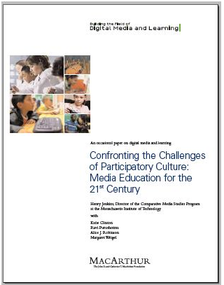

Participatory Culture
Confronting the Challenges of Participatory Culture: Media Education for the 21st Century,
The paper first identifies three concerns which require the need for "pedagogical interventions":
The Participation Gap — the unequal access to the opportunities, experiences, skills, and knowledge that will prepare youth for full participation in the world of tomorrow
The Transparency Problem — The challenges young people face in learning to see clearly the ways that media shape perceptions of the world.
The Ethics Challenge — The breakdown of traditional forms of professional training and socialization that might prepare young people for their increasingly public roles as media makers and community participants.
The majority of the report addresses 11 "new skills" students need to be fully successful in the social networking environment:
- Play — the capacity to experiment with one’s surroundings as a form of problem-solving
- Performance — the ability to adopt alternative identities for the purpose of improvisation and discovery
- Simulation — the ability to interpret and construct dynamic models of real-world processes
- Appropriation — the ability to meaningfully sample and remix media content
- Multitasking — the ability to scan one’s environment and shift focus as needed to salient details.
- Distributed Cognition — the ability to interact meaningfully with tools that expand mental capacities
- Collective Intelligence — the ability to pool knowledge and compare notes with others toward a common goal
- Judgment — the ability to evaluate the reliability and credibility of different information sources
- Transmedia Navigation — the ability to follow the flow of stories and information across multiple modalities
- Networking — the ability to search for, synthesize, and disseminate information
- Negotiation — the ability to travel across diverse communities, discerning and respecting multiple perspectives, and grasping and following alternative norms.